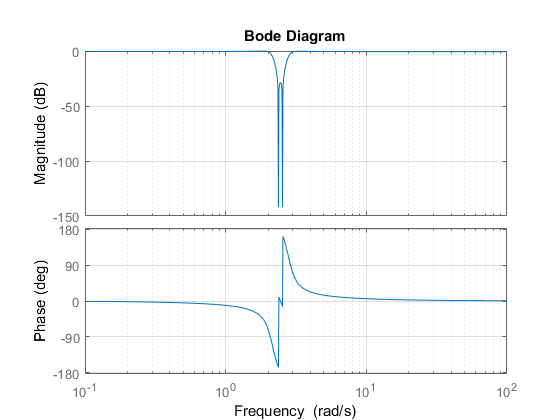

Contents
DSP Homework 2 2.1-5
num = [.94 0 11.33 0 33.99];
den = [1 0.94 12.66 5.64 36];
H = tf(num,den)
bode(H, {0,10^2})
grid on;
figure;
H =
0.94 s^4 + 11.33 s^2 + 33.99
----------------------------------------
s^4 + 0.94 s^3 + 12.66 s^2 + 5.64 s + 36
Continuous-time transfer function.

DSP Homework 2 2.2-2
num2 = [1 -2];
den2 = [1 2];
H2 = tf(num2,den2)
bode(H2, {0,10^2})
grid on;
figure;
H2 =
s - 2
-----
s + 2
Continuous-time transfer function.
DSP Homework 2 2.3-3 a
num3 = [0 1000000];
den3 = [1 1000000];
H3 = tf(num3, den3)
bode(H3, {0, 10^7})
grid on;
figure;
H3 =
1e06
--------
s + 1e06
Continuous-time transfer function.
DSP Homework 2 2.4-2
T = 1;
h = @(t) 1/(T)*sinc(3*t/T) * (heaviside(t) - heaviside(t-T));
fplot(h);
figure;
Warning: Function fails on array inputs. Use element-wise operators to increase
speed.
DSP Homework 2 2.6-1
w0 = 0.79735;
w = [0:0.1:10];
Hp = @(w) 1./((j.*w).^3 + 2*(j.*w).^2 + 2*(j.*w) + 1)
w1b = 5;
Hhp = @(w) 1./(((w0.*w1b)./(-j*w)).^3 + 2.*((w0.*w1b)./(-w*j)).^2 + 2.* (w0.*w1b)./(-j*w) + 1);
subplot(2,1,1);
plot(w, abs(Hhp(w)));
grid on
xlabel('Frequency (rads)');
ylabel('Magnitude');
title('Magnitude plot of H(w) of the High Pass Filter');
subplot(2,1,2);
plot(w, angle(Hhp(w)));
grid on
xlabel('Frequency (rads)');
ylabel('Phase angle');
title('Phase plot of H(w) of the High Pass Filter');
figure;
w1c = 3;
w2c = 4;
Hbp = @(w) 1./((w0.*(((w).^2- (w1c.*w2c))./((j*w).*(w2c-w1c)))).^3 + ...
2.*(w0.*(((w).^2- (w1c.*w2c))./((j*w).*(w2c-w1c)))).^2 + ...
2.*(w0.*(((w).^2- (w1c.*w2c))./((j*w).*(w2c-w1c)))) + 1);
subplot(2,1,1);
plot(w, abs(Hbp(w)));
grid on
xlabel('Frequency (rads)');
ylabel('Magnitude');
title('Magnitude plot of H(w) of the Band Pass Filter');
subplot(2,1,2);
plot(w, angle(Hbp(w)));
grid on
xlabel('Frequency (rads)');
ylabel('Phase angle');
title('Phase plot of H(w) of the Band Pass Filter');
Hp =
function_handle with value:
@(w)1./((j.*w).^3+2*(j.*w).^2+2*(j.*w)+1)